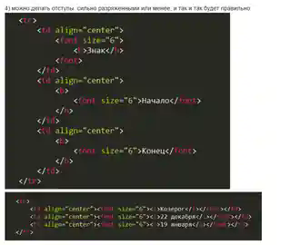
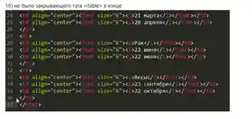

Пишем HTML без путаницы.
Ошибки в тегах, таблицы, структура документа, отступы, ссылки, картинки и бегущая строка. Примеры с подсветкой синтаксиса — в одном месте.
А теперь сухо по коду.
Соблюдаем вложенность и закрываем теги
Были ошибки с закрывающим тегом </b>: он располагался не на своём месте, а где-то отсутствовал. Теги должны закрываться в порядке, обратном их открытию.
<b><font size="6">Конец</font></b><font size="6"><b>Конец</b></font><b><font size="6">Начало</b></font><b><font size="6">Конец</font><b><font size="6">Конец</font></b>Если сначала открыли <b>, а внутри него <font>, сначала закрываем </font>, затем </b>.
В конце таблицы нужен </table>
В исходном коде отсутствовал закрывающий тег </table> перед концом документа. Это видно на приложенном фрагменте.
</tr>
</html> </tr>
</table>
</body>
</html>См. визуальный фрагмент приложенного скриншота в разделе «Фрагменты скриншотов» ниже.
Разделяем <head> и <body>
По правилам внутри <html> после <head>...</head> должен располагаться <body>. Именно в нём размещается основное содержимое страницы.
<!doctype html>
<html lang="ru">
<head>
<meta charset="UTF-8">
<title>Моя страница</title>
</head>
<body>
<h1>Привет!</h1>
</body>
</html>Отступы показывают вложенность
Отступы помогают понять, какие элементы находятся внутри других. Они не меняют структуру HTML, но делают код проще для чтения и проверки.
<table>
<tr>
<td align="center">
<b>Знак</b>
</td>
</tr>
</table>Отступы могут быть разной ширины
Можно делать большие или маленькие отступы. Оба варианта синтаксически допустимы. Главное — последовательность и наглядная вложенность.
<tr>
<td align="center">
<font size="6">
<b>Знак</b>
</font>
</td>
</tr><tr>
<td align="center"><font size="6">
<i>Козерог</i></font></td>
</tr></font> написано <font>. Это отдельная ошибка закрытия тега; ширина отступов здесь ни при чём.Переход на другую страницу через <a>
Ссылка задаётся тегом <a>, а её адрес — атрибутом href. Адрес может вести на соседний HTML-файл или на сайт в интернете.
<a href="Овен.html">Овен</a><a href="https://ya.ru/">yandex</a>Создаём файл Овен.html рядом с другими
Для ссылки href="Овен.html" нужно создать файл Овен.html в той же папке, что и текущая страница.
сайт/
├── index.html
├── Овен.html
└── Овен.jpgБегущая строка — <marquee>
Внутри тега <marquee> пишем текст. Его можно обернуть, например, в заголовок <h1>. Атрибуты позволяют задать отскок от краёв и скорость.
<marquee behavior="alternate" scrollamount="20">
<h1>♈ ОВЕН — ЗНАК ОГНЯ ♈</h1>
</marquee>| Атрибут | Значение |
|---|---|
behavior="alternate" | Текст отскакивает от краёв. |
scrollamount="20" | Скорость движения: чем больше значение, тем быстрее. |
Добавляем картинку через <img>
В src указывается название файла изображения или адрес изображения в интернете.
<img src="Овен.jpg" /><img src="Овен.jpg">. Полезно дополнительно задать alt — текстовое описание картинки.Центрирование через <center>
Тег <center>...</center> позволяет поместить содержимое по центру страницы. В учебном HTML без CSS такой вариант встречается.
<center>
<h1>ОВЕН ♈</h1>
<img src="Овен.jpg" alt="Знак зодиака Овен">
</center><font>, <center> и <marquee> устарели. Здесь они оставлены сознательно, чтобы сохранить логику исходного учебного разбора. В реальных проектах их оформление и анимацию обычно делают с помощью CSS.Фрагменты из приложенных скриншотов
Два приложенных снимка показывают разные варианты форматирования таблицы и отсутствие закрывающего </table>. Ниже — уменьшенные версии снимков и текстовые воспроизведения видимых фрагментов с подсветкой. В них сохранены детали ошибок из скриншотов.


<tr>
<td align="center">
<font size="6">
<b>Знак</b>
<font>
</td>
<td align="center">
<b>
<font size="6">Начало</font>
</b>
</td>
<td align="center">
<b>
<font size="6">Конец</font>
</b>
</td>
</tr><font> вместо </font>.<tr>
<td align="center"><font size="6"><i>Козерог</i></font></td>
<td align="center"><font size="6"><i>22 декабря</i></font></td>
<td align="center"><font size="6"><i>19 января</i></font></td>
</tr><td align="center"><font size="6"><i>21 марта</i></font></td>
<td align="center"><font size="6"><i>20 апреля</i></font></td>
</tr>
<tr>
<td align="center"><font size="6"><i>Рак</i></font></td>
<td align="center"><font size="6"><i>22 июня</i></font></td>
<td align="center"><font size="6"><i>22 июля</i></font></td>
</tr>
<tr>
<td align="center"><font size="6"><i>Весы</i></font></td>
<td align="center"><font size="6"><i>23 сентября</i></font></td>
<td align="center"><font size="6"><i>22 октября</i></font></td>
</tr>
</html></html> необходимо закрыть </table> и </body>.Отступы — дело оформления. Правильная вложенность, закрывающие теги и структура HTML — требования к корректному коду.
Для публикации скриншоты уменьшены и встроены в SVG. Ниже показаны те же фрагменты в виде доступного для копирования кода. Полноразмерные оригиналы сохранены отдельно.